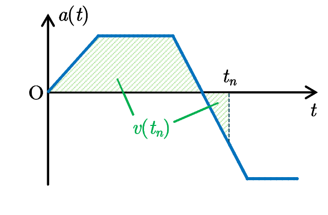
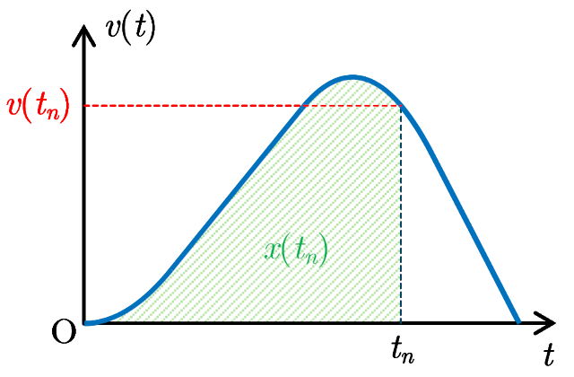
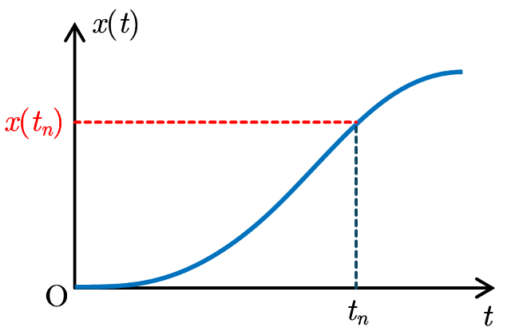
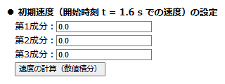
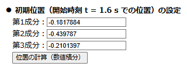

■ 解析の流れ
本アプリによる加速度データ解析では，読み込んだ加速度データから数値積分によって速度データを求め，さらに速度データから数値積分によって位置データを求め，それらのデータをグラフで可視化する．解析の流れは以下のとおりである（▶ の行をクリックすると説明が出てくる）．
数値積分について

$v$-$t$ グラフ

$x$-$t$ グラフ

$x$軸上を運動（1次元運動）する物体の位置が時刻$t$の関数 $x=x(t)$ として表されている場合，物体の速度$v$は位置$x$を時刻$t$で微分することにより，時刻$t$の関数 $$v(t)=\frac{dx}{dt}$$ として得られる．さらに，物体の加速度$a$は速度$v$を時刻$t$で微分することにより，時刻$t$の関数 $$a(t)=\frac{dv}{dt}=\frac{d^2x}{dt^2}$$ として得られる．よって，加速度$a$が分かっている場合，ある時刻$t_n$での速度$v(t_n)$を得るには，加速度$a$を時刻$t=0$から$t=t_n$まで積分すればよい． $$v(t_n)=\int_{0}^{t_n}\!\!a(t)dt+v_0$$ ここで，$v_0$は時刻$t=0$での速度（初速度）である．さらに，時刻$t_n$での位置$x(t_n)$を得るには，速度$v$を時刻$t=0$から$t=t_n$まで積分すればよい． $$x(t_n)=\int_{0}^{t_n}\!\!v(t)dt+x_0$$ ここで，$x_0$は時刻$t=0$での位置（初期位置）である．定積分は，グラフで囲まれた領域の面積を求めることであるので，図のように加速度のグラフ($a$-$t$グラフ)の加速度曲線で囲まれた符号付き面積（$t$軸より上の部分の面積を正，下の部分の面積を負として計算する）を求めることで，速度のグラフ（$v$-$t$グラフ）が得られる．また，速度曲線で囲まれた符号付面積を求めることで，位置のグラフ（$x$-$t$グラフ）が得られる．
【台形公式による数値積分】
加速度データを読み込む
本アプリを開くと下図のようにファイルアップロード画面となる．「ファイルを選択」ボタンを押して，加速度データを含むCSVファイルをアップロードする．その際，CSVファイルの先頭行が各列のデータを表すラベルになっていれば，「先頭行をラベルとする」にチェックを入れる．
※ ただし，加速度測定アプリの「データの解析」ボタンで本アプリを開いた場合は，すでに測定した加速度データを読み込んだ状態で開く．
CSVファイルが読み込まれると下図のようにCSVデータがテーブルで表示される．ここでは，例として，加速度測定アプリで測定した放物運動の加速度データを示している．必要であれば，数値データにおける長さの単位と時間の単位を設定する．また，「▶ グラフのマーカー・線の設定」の行をクリックすると，後でデータをグラフ化する際のグラフのマーカー・線のモードやサイズの設定を変更することができる（各種設定）．
次に，テーブルに表示された読込データから時刻列と加速度列を選択する．加速度列は複数選択可能であり，最大3つの列（加速度の$x$,$y$,$z$成分を想定）を選択することができる．加速度列を複数選択するには，PCの場合，ShiftキーまたはCtrlキーを押しながら項目をクリックして複数選択された状態で決定ボタンを押し，スマートフォンやタブレットの場合，複数の項目をチェックし決定ボタンを押せばよい．加速度列を選択した後に，時刻列を変更した場合は，再度加速度列を選択しなおす必要がある．時刻列と加速度列を選択し，決定ボタンを押すと，その下に選択した時刻列を横軸にとった加速度データのグラフが表示される．下図において，加速度測定アプリで得られた静止座標系での加速度の$x$, $y$, $z$成分(awx[m/s^2], awy[m/s^2], awz[m/s^2])が選択されている．

横軸の時刻3.37秒から4.46秒までが放物運動している時間であり，その間は加速度の$x$,$y$成分（水平方向成分）はほぼゼロで，$z$方向成分（鉛直方向成分）のみが値をもつ（鉛直下向きに約9.8m/s2の一定の値となっている）．放物運動の前後で加速度が急激に変化しているのは，スマートフォンを投げたときの力とキャッチしたときの衝撃によるものである．
次に，分析に使用する時間領域（数値積分する範囲）を設定する．表示された加速度データのグラフを確認し，分析を行う加速度データの開始時刻と終了時刻を選択し，決定ボタンを押す．決定ボタンを押すと，指定した時間領域での加速度データのグラフが表示される（複数の加速度を選択した場合は，成分ごとにグラフが表示される）．グラフのすぐ上の「▶ 加速度データ」をクリックすると，指定した時間領域の加速度データのテーブルが表示される（もう一度クリックするとテーブルが閉じる）．

必要に応じて，加速度のゼロ調整（加速度データ全体をシフトしてゼロとなる位置を調整する）や加速度データの平滑化（フーリエ変換による平滑化，最小二乗近似による平滑化）を行う．
加速度データから速度データを求める

数値積分により加速度データから速度データを得るために，初期速度（分析に使用する時間領域で設定した開始時刻における速度）を成分ごとに設定する．何らかの装置を用いて速度を計測していない限り，一般に初期速度が事前に分かっていることはないので，加速度データを測定する際には静止状態から測定を開始し，初期速度をゼロとすると解析しやすい．その場合は，初期速度のすべての成分を0.0としたまま，「速度の計算（数値積分）」ボタンを押せばよい．
「速度の計算（数値積分）」ボタンを押すと，設定した初期速度で加速度データを数値積分して速度データが得られ，速度のグラフが表示される（複数の加速度を選択した場合は，成分ごとに速度のグラフが表示される）．グラフのすぐ上の「▶ 速度データ」をクリックすると，指定した時間領域の速度データのテーブルが表示される（もう一度クリックするとテーブルが閉じる）．
必要に応じて，速度のゼロ調整（速度データ全体をシフトしてゼロとなる位置を調整する）や速度データの平滑化（フーリエ変換による平滑化，最小二乗近似による平滑化）を行う．
速度データから位置データを求める

数値積分により速度データから位置データを得るために，初期位置（分析に使用する時間領域で設定した開始時刻における位置）を成分ごとに設定する．図では，スマートフォンを投げた瞬間（時刻3.37秒）での位置が原点となるように初期位置を設定している．初期位置を設定後，「位置の計算（数値積分）」ボタンを押すと，速度データを数値積分して位置データが得られ，位置のグラフが表示される（複数の加速度を選択した場合は，成分ごとに位置のグラフが表示される）．
必要に応じて，位置のゼロ調整（位置データ全体をシフトしてゼロとなる位置を調整する）や位置データの平滑化（フーリエ変換による平滑化，最小二乗近似による平滑化）を行う．
加速度・速度・位置データを出力する
数値積分により位置データが得られたら，「加速度・速度・位置データの出力」と表示された行の右端の「出力」ボタンを押して，加速度・速度・位置データのテーブルとグラフをまとめて表示させる．これらのデータはCSVファイルとしてダウンロードすることができる．

位置データから軌跡を表示する
加速度・速度・位置データを出力すると，運動の軌跡をプロットすることができる．軌跡をプロットする時間領域（開始時刻と終了時刻）を選択し，「決定」ボタンを押すと，選択した開始時刻から終了時刻までの運動の軌跡が表示される．加速度の選択で2成分を選択した場合は平面における２次元の軌跡，3成分を選択した場合は空間における3次元の軌跡となる．ただし，加速度列の選択で1成分のみ選択した場合，軌跡は表示されない．


軌跡のプロットの下にある「スタート」ボタンを押すと，軌跡上での運動の様子がアニメーションで表示される．ボタンの右にあるスライダーでアニメーションの速さを調節できる．移動する点を始点とした青い矢印と緑の矢印は，それぞれ速度ベクトルと加速度ベクトルを表しており，運動中の速度と加速度の時間変化を可視化している．「スタート」ボタンの下にある「速度ベクトル」と「加速度ベクトル」のチェックボックスで，ベクトルの表示・非表示を切り替えることができる．また，右側のスライダーでこれらのベクトルの長さを調整できる．